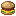

Apple Juice
Una bebida refrescante preparada con manzana y azúcar. Ideal para obtener un impulso de velocidad durante tus aventuras.
Apple Juice
🍎 Comida: +3
⚡ Velocidad X durante 5 segundos
✦ Saturación: +2
Al beber Apple Juice obtendrás Velocidad X durante 5 segundos.

Bacon
Bacon crujiente preparado con carne de cerdo cocida. Una comida sencilla pero bastante efectiva.
Bacon
🍖 Comida: +3
✦ Saturación: +5
📦 Crafteo: 3 unidades
Utiliza Cooked Porkchop para crear 3 unidades de Bacon. La receta acepta las tres posiciones horizontales.
Beer
Una bebida especial que proporciona un pequeño impulso de velocidad y recuperación.
Beer
🍺 Comida: +2
⚡ Velocidad II durante 10 segundos
✚ Regeneración I durante 5 segundos
✦ Saturación: +2
Al beber Beer recibirás Velocidad II durante 10 segundos y Regeneración I durante 5 segundos.
Burger
Una hamburguesa completa hecha con pan, queso y carne. Una de las comidas más eficientes de Food Expansion.

Burger
🍔 Comida: +8
✦ Saturación: +12
Bread + Cheese + Cooked Beef. La receta es shapeless.
Cheese
Queso fresco que puede utilizarse tanto como alimento como ingrediente para preparar una Burger.
Cheese
🧀 Comida: +4
✦ Saturación: +6
📦 Crafteo: 3 unidades
Utiliza un Milk Bucket para obtener 3 unidades de Cheese.
Chicken Wing
Alitas de pollo crujientes preparadas con Chicken cocido.
Chicken Wing
🍗 Comida: +5
✦ Saturación: +7
📦 Crafteo: 2 unidades
Utiliza Cooked Chicken para obtener 2 Chicken Wings.
Chips
Un snack crujiente hecho a base de papas.
Chips
🍟 Comida: +3
✦ Saturación: +2
📦 Crafteo: 3 unidades
Utiliza Potato en cualquiera de las tres posiciones horizontales para crear 3 Chips.
Chocolate
Una deliciosa barra de chocolate preparada con cacao, azúcar y leche.
Chocolate
🍫 Comida: +2
✦ Saturación: +3
📦 Crafteo: 2 unidades
Combina Cocoa Beans, Sugar y Milk Bucket. La receta tiene dos posiciones posibles.
Chocolate Cake
Un pastel de chocolate preparado con ingredientes dulces y Chocolate.
Chocolate Cake
🍰 Comida: +6
✦ Saturación: +4
📦 Crafteo: 3 unidades
Sugar + Chocolate + Milk Bucket + Wheat. Produce 3 Chocolate Cakes.
Cola
Una bebida gaseosa y refrescante que proporciona un pequeño aumento de velocidad.
Cola
🥤 Comida: +3
⚡ Velocidad II durante 8 segundos
✦ Saturación: +1
Combina Black Dye, Sugar y Potion para crear una Cola.
Food Expansion
Explora todos los alimentos personalizados de PolarMC y descubre cuáles se adaptan mejor a tu estilo de juego.